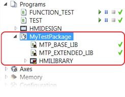
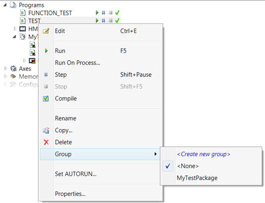

Grouping is available from Motion Perfect version 4.3.
A group is a way to separate items in the project (BASIC programs, libraries, IEC tasks …) by their semantics or any other criteria.
A group is displayed in the project tree and all the items in it are displayed below the group name:

Group items in the tree have their own context menu described below:
|
Operation |
Notes |
|
New |
Create a new empty program (see " Creating a New Program ") or item of other type and add it to the group |
|
Load… |
Load a program (or an item of other type) from disk and add it to the group |
|
Compile All |
Compile all programs and items in the group |
|
Stop All (Halt) |
Stop all running programs in the group |
|
Create Package From Group |
Create a new or updated package from the items in the group. |
|
Rename |
Rename the group |
|
Ungroup |
Move all programs and items out of the group and delete it. The programs and items remain in the project ungrouped. |
|
Delete… |
Remove all the programs and other items from the group as well as the group itself. |
Most of items in the project can be moved to a group or moved outside a group if they are in one. This can be done in any of the following ways:
- from the target item’s context menu:

The list of available groups is displayed under “Group” menu item. The current group to which the item belongs is checked. This menu is also available when more than one item is selected.
- drag target item(s) and drop it on to existing group or group member.
A new group can be created by moving an item to it. This is done from the item’s context menu “Group”→”<Create new group>” and choosing a group name. The context menu “Group” is also available when we have several selected items into Controller Tree.
A group is automatically deleted when empty.
A group is used as a source of package generation. More information can be found in Package Authoring topic.